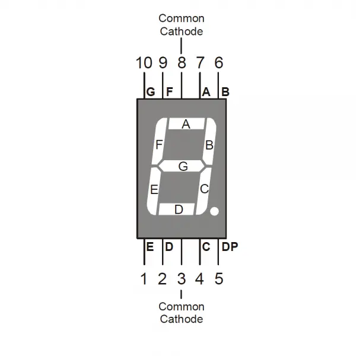
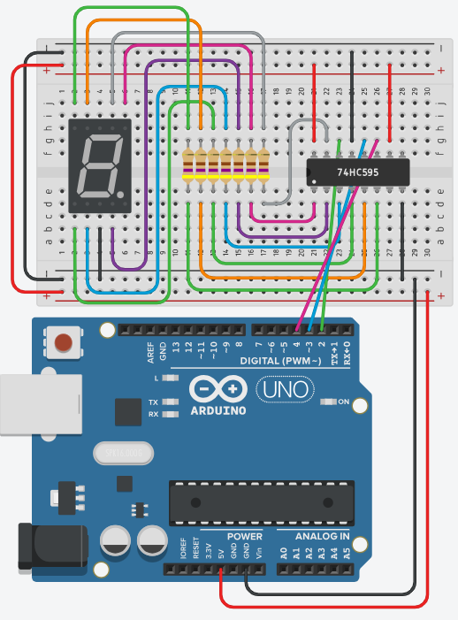

1x 7 segment display
Stuur een 7 segment display aan met een 74HC595 schuifregister. Je begint met één segment en werkt zo toe naar een aftelling van 3 naar 1.
De vier ingangssignalen DS, SHCP, STCP en /OE en de volgorde waarin de bits naar buiten geschoven worden, staan uitgelegd in Werking van het schuifregister. Daar staat ook een simulatie waarmee je het zelf kan uitproberen voor je begint te solderen of te bedraden.
Stap 1: 7 segment display
Het schema (in stap 2) gaat er vanuit dat je werkt met een common cathode 7 segment display. Om te weten te komen welk type display jij hebt (common anode of common cathode) maak je eerst een schakeling waarbij je één segment probeert te doen oplichten. In TinkerCAD kan je het zelf instellen.

Bij een common cathode display licht een segment op bij een hoog niveau, bij een common anode display bij een laag niveau. Het volledige verschil, met de segmentnamen erbij, staat op Het 7-segment display uit labo 1.
Stap 2: schema
Voorschakelweerstanden
In de datasheet kan je onder Limiting values lezen dat de output current op pin Q0 tot en met Q7 maximum 35 mA bedraagt. Maar de supply current (of de ground current) is maximum 70 mA.
Dit betekent dat de IC maximum 70 mA kan sourcen of sinken over alle uitgangspinnen samen.
Gezien we 7 segmenten (tegelijk) aansturen betekent dit dat we op iedere pin maximum 10 mA mogen sourcen of sinken.
Bereken hoeveel de voorschakelweerstand moet bedragen als je weet dat de voedingsspanning 5 V bedraagt, de doorlaatspanning van een rode led 1.8 V is en de stroom 10 mA mag bedragen.
R = U / I
R = (5 V - 1.8 V) / 0.01 A
R = 320 ohm
De eerstvolgende weerstand in de E12-reeks is 330 ohm. Wij spelen op veilig en hebben gekozen voor 470 ohm.
Aansluitschema
Sluit je schakeling aan zoals hieronder. Het schuifregister hangt aan drie digitale pinnen van je Arduino, en die drie pinnen gebruik je in heel labo 3 opnieuw.

Stap 3: code
Definiëren van I/O
Begin altijd eerst met het definiëren van pinnummers als constanten. Het is ook altijd een goed idee om er commentaar bij te schrijven zodat je weet wat de pinnen eigenlijk betekenen. Als je later je programma bekijkt of moet debuggen weet je onmiddellijk welke pin wat doet.
const int pinDS = 2; // Data ingang
const int pinSTCP = 3; // 0 naar 1 = schuifregister naar storage register
const int pinSHCP = 4; // 0 naar 1 = seriële ingang naar schuifregister
void setup()
{
pinMode(pinDS, OUTPUT);
pinMode(pinSTCP, OUTPUT);
pinMode(pinSHCP, OUTPUT);
}
void loop()
{
}Stijgende flank?
De ingangen SHCP en STCP reageren volgens de datasheet enkel op een stijgende flank. Dit kan je nalezen in de functional description.
Tot nu toe hebben we enkel digitalWrite(pinNummer, HIGH) en digitalWrite(pinNummer, LOW) gebruikt. Dat zijn echter twee vaste toestanden en deze keer willen we een flank.
Om dat te simuleren bouwen we zelf een functie risingEdge. Bekijk de code eens en vraag uitleg in het labo als je dit niet meteen snapt.
void risingEdge(int pinNummer)
{
digitalWrite(pinNummer, LOW);
digitalWrite(pinNummer, HIGH);
}De functie mag je bijvoorbeeld onder loop() schrijven.
Eén segment
Voor we beginnen met het programmeren van de cijfers gaan we eerst eens proberen om segment A aan te sturen. Bij een common cathode display moeten we de toestanden uit onderstaande tabel op de uitgangen krijgen.
| Q0 | Q1 | Q2 | Q3 | Q4 | Q5 | Q6 | Q7 |
|---|---|---|---|---|---|---|---|
| 1 | 0 | 0 | 0 | 0 | 0 | 0 | 0 |
Omdat de bit die je als laatste inschuift op Q0 terechtkomt, begin je bij Q7 en eindig je bij Q0. Hiervoor moeten we:
- Q7: de ingang DS op 0 zetten en een stijgende flank triggeren op SHCP
- Q6: de ingang DS op 0 zetten en een stijgende flank triggeren op SHCP
- Q5: de ingang DS op 0 zetten en een stijgende flank triggeren op SHCP
- Q4: de ingang DS op 0 zetten en een stijgende flank triggeren op SHCP
- Q3: de ingang DS op 0 zetten en een stijgende flank triggeren op SHCP
- Q2: de ingang DS op 0 zetten en een stijgende flank triggeren op SHCP
- Q1: de ingang DS op 0 zetten en een stijgende flank triggeren op SHCP
- Q0: de ingang DS op 1 zetten en een stijgende flank triggeren op SHCP
- een stijgende flank triggeren op STCP (inhoud schuifregister naar storage register)
In code ziet dit er zo uit:
const int pinDS = 2; // Data ingang
const int pinSTCP = 3; // 0 naar 1 = schuifregister naar storage register
const int pinSHCP = 4; // 0 naar 1 = seriële ingang naar schuifregister
void setup()
{
pinMode(pinDS, OUTPUT);
pinMode(pinSTCP, OUTPUT);
pinMode(pinSHCP, OUTPUT);
}
void loop()
{
a();
}
void risingEdge(int pinNummer)
{
digitalWrite(pinNummer, LOW);
digitalWrite(pinNummer, HIGH);
}
void a()
{
digitalWrite(pinDS, LOW);
risingEdge(pinSHCP);
digitalWrite(pinDS, LOW);
risingEdge(pinSHCP);
digitalWrite(pinDS, LOW);
risingEdge(pinSHCP);
digitalWrite(pinDS, LOW);
risingEdge(pinSHCP);
digitalWrite(pinDS, LOW);
risingEdge(pinSHCP);
digitalWrite(pinDS, LOW);
risingEdge(pinSHCP);
digitalWrite(pinDS, LOW);
risingEdge(pinSHCP);
digitalWrite(pinDS, HIGH);
risingEdge(pinSHCP);
risingEdge(pinSTCP);
}Aftellen van 3 naar 1
Nu je één segment kan aansturen met a(), maak je er nog drie procedures bij: three(), two() en one(). Daarin doe je telkens de juiste segmenten oplichten, met een pauze van 1 seconde ertussen. De bedoeling is dat je aftelt van 3 naar 1.
Welke segmenten je per cijfer nodig hebt, lees je af uit dit overzicht:

Indienen
Sla je oefening op.
Overloop volgende checklist om je oefening zelf te evalueren:
Oplossing
Deze oplossing gaat uit van een common cathode display, waarbij een 1 een segment doet oplichten. Heb jij een common anode display, dan draai je de waarden in de patronen om (of je keert HIGH en LOW om in toonPatroon()).
De opdracht vraagt drie procedures three(), two() en one(), maar je wil niet drie keer acht regels digitalWrite overtikken. Daarom zet je het patroon van elk cijfer in een array en schrijf je één keer een functie toonPatroon() die zo'n array naar buiten schuift. De drie procedures blijven dan één regel lang.
Let op de volgorde in toonPatroon(): de laatst verschoven bit belandt op Q0, dus loop je de array van achter naar voor door. Pas helemaal op het einde geef je één stijgende flank op STCP, zodat het hele cijfer in één keer verschijnt.
const int pinDS = 2; // Data ingang
const int pinSTCP = 3; // 0 naar 1 = schuifregister naar storage register
const int pinSHCP = 4; // 0 naar 1 = seriële ingang naar schuifregister
// Volgorde van de segmenten: Q0=a, Q1=b, Q2=c, Q3=d, Q4=e, Q5=f, Q6=g, Q7=dp
const bool patroonDrie[8] = {1, 1, 1, 1, 0, 0, 1, 0}; // a b c d g
const bool patroonTwee[8] = {1, 1, 0, 1, 1, 0, 1, 0}; // a b d e g
const bool patroonEen[8] = {0, 1, 1, 0, 0, 0, 0, 0}; // b c
void setup()
{
pinMode(pinDS, OUTPUT);
pinMode(pinSTCP, OUTPUT);
pinMode(pinSHCP, OUTPUT);
}
void risingEdge(int pinNummer)
{
digitalWrite(pinNummer, LOW);
digitalWrite(pinNummer, HIGH);
}
// Schuift 8 bits naar buiten. De laatst verschoven bit komt op Q0 terecht,
// dus we lopen de array van achter (Q7) naar voor (Q0) door.
void toonPatroon(const bool patroon[])
{
for (int i = 7; i >= 0; i--)
{
digitalWrite(pinDS, patroon[i] ? HIGH : LOW);
risingEdge(pinSHCP);
}
risingEdge(pinSTCP); // pas nu wordt het cijfer zichtbaar
}
void three()
{
toonPatroon(patroonDrie);
}
void two()
{
toonPatroon(patroonTwee);
}
void one()
{
toonPatroon(patroonEen);
}
void loop()
{
three();
delay(1000);
two();
delay(1000);
one();
delay(1000);
}